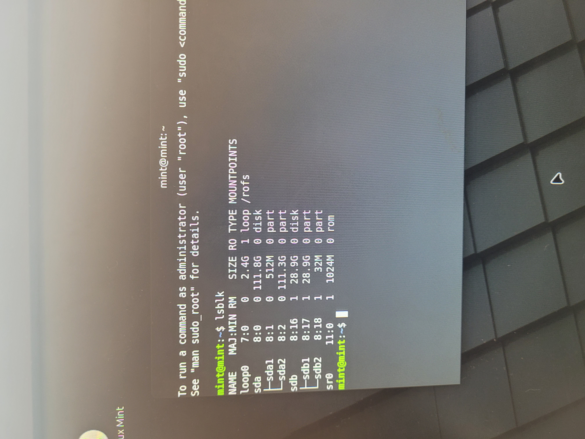
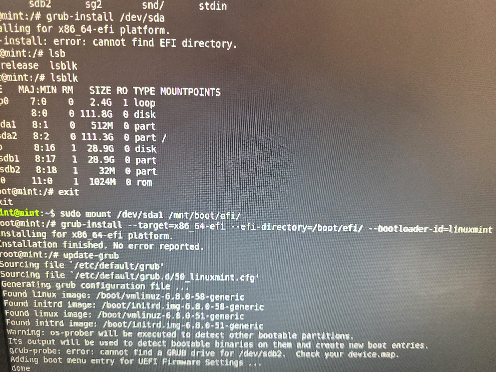

I came this morning to check on the computers one last time to see if everything is running as they should be, the 1st class computers all ran fine so I moved to the next class, everything there was in working order, except one computer which ironically enough was of the 2 computers with that weird BIOS, so I gave the teacher a quick call to let him know about that and I told him that I will fix it, the issue of that computer is that when the GRUB menu show up pressing enter makes the GRUB menu opens again while freezing the keyboard so this was an indication that GRUB is failing to detect the installation partition because of prior experience with Arch Linux (btw), so luckily I had my flash drive with me because I knew that I might need it, so I booted a Linux Mint live environment and started working on it, I first used "lsblk" to to check on the partition then started fixing the broken GRUB:  Turns out GRUB was thinking that there is no installation present in the Hard drive so what I did is basically try to do is reinstall GRUB and point it to the right partition just like so:  After that the computer now boots up fine, and officially everything is running well, so by the time the teacher came he paid me for the 2nd class, and that was that, overall this experience was fruitful, as I learned a bit about how to migrate systems into a different OS, troubleshoot them and make sure they keep running well for years to come.